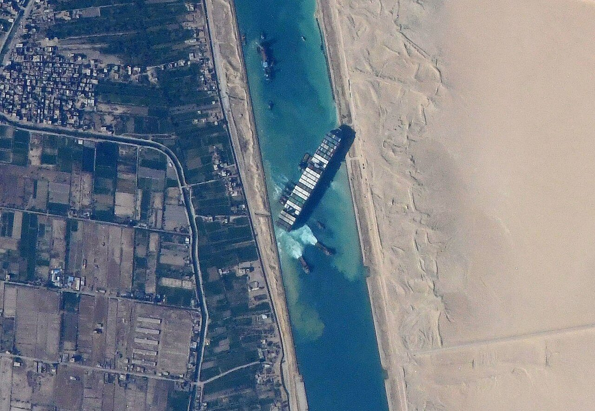
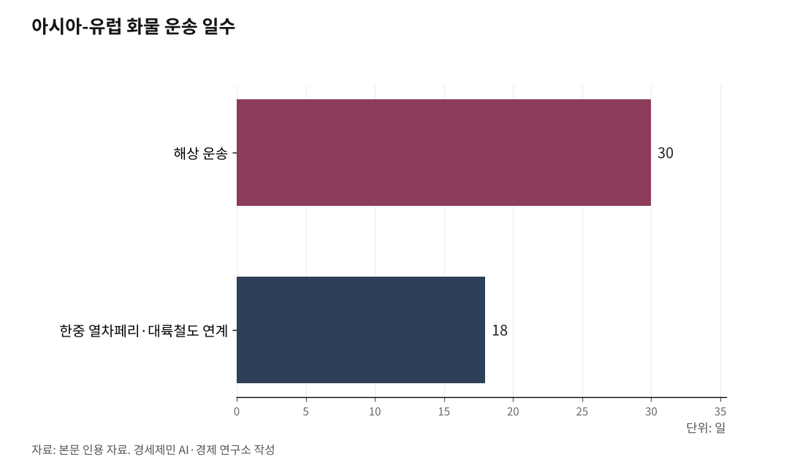

[인천해양산업, 기로⑩]한중열차페리,유럽 18일...중동우회
인천-웨이하이-함부르크, 루트는 있는데 설계자가 없다
카페리 15시간, 열차 18일… 유럽 가는 길 절반이 비어
AI경제저널=김갑봉 기자 | 2026년 3월 현재 미국과 이스라엘의 침략 전쟁에 맞선 이란이 호르무즈 해협을 봉쇄 하고 있다. 후티 반군의 홍해 공격 중단 선언에도 수에즈 운하 통항량은 2023년 대비 60% 낮은 수준에 머물러 있다(BIMCO, 2026.1.). 아시아와 유럽을 잇는 해상 루트는 2년째 흔들리고 있다.

이 위기를 우회하는 대안 루트가 있다. 일례로 중국 산둥성 웨이하이(威海)에서 독일 함부르크까지 철도로 닿는 길이다. 웨이하이-함부르크 블록트레인(Block Train, 직통 화물열차)이다. 2017년 9월 개통됐다. 거리는 1만1000km. 소요 일수는 15~18일이다.
해상 30일을 18일로 줄이는 길이 있다
중국 산둥성 웨이하이(威海)에서 독일 함부르크까지 철도로 닿는 루트가 있다. 웨이하이-함부르크 블록트레인(Block Train, 직통 화물열차)이다. 2017년 9월 개통됐다. 거리는 1만1000km. 소요 일수는 15~18일이다.
인천에서 카페리로 웨이하이까지 가는 데 하루 안팎이 걸린다. 이 구간을 더하면 인천에서 함부르크까지 총 18일 내외다. 수에즈 운하를 경유하는 기존 해상 루트(30일 내외)보다 30~40% 빠르다. 항공 대비 운임은 80% 저렴하다.
인천-웨이하이 카페리 노선은 이미 정기 운항 중이다. 웨이하이-함부르크 블록트레인도 이미 굴러가고 있다. 두 루트를 잇기만 하면 된다.

인천이 부산보다 두 배 가깝다
이 루트에서 인천은 부산보다 유리한 위치에 있다.
인천-웨이하이 해상 항로 거리는 약 412km(222해리)다. 부산-상하이 해상 항로 거리(880~990km)의 절반에도 못 미친다. 카페리 운항 시간과 연료비 모두 인천이 유리하다.
학술적으로도 검증됐다. 국제학술지 Atlantis Press에 실린 논문 「Path Evaluation of Land-Sea Intermodal Transportation between China and South Korea」(Zhao 외, 2021)는 한중 복합운송 경로 4가지를 비용(8570위안/TEU), 소요시간(17시간), 안전성 등을 AHP(Analytic Hierarchy Process, 계층분석법)로 분석했다. 결론은 "웨이하이항-인천항-인천공항 경로가 최적"이었다.
제도적 기반도 있다. 한중 FTA(자유무역협정) 제17장 제17.25조는 웨이하이시와 인천경제자유구역(IFEZ)을 지방경제협력 시범지구로 명시했다. 국가 간 조약에 두 도시를 협력 거점으로 못 박아 놓은 것이다.
인천항 2024년 카페리 물동량은 44만4420TEU로 전년 대비 5.6% 늘었다(인천항만공사, 2024년). 이미 중국과의 해상 물류 기반이 작동하고 있다.
수에즈 리스크는 반복된다
2024년 예멘 후티 반군의 상선 공격이 이어지면서 수에즈 운하 통과 물동량이 최대 42% 감소했다(UNCTAD, 2024.2.). 글로벌 선사들이 아프리카 남단 희망봉으로 우회했고, 유럽 항로 운송 기간이 10~14일 늘었다. 해상 운임은 폭등했다.
이 사태가 처음이 아니다. 2021년 3월에는 초대형 컨테이너선 에버기븐호가 수에즈 운하에 좌초했다. 6일 동안 운하가 완전히 막혔다. 하루 약 96억 달러(약 12조8000억원) 규모 교역이 멈춘 것으로 추산됐다(Lloyd's List, 2021). 2010년대에는 소말리아 해적이 기승을 부렸다. 중동 정세가 불안할 때마다 수에즈는 위험 변수가 됐다.
인천-웨이하이-TCR(Trans-China Railway, 중국횡단철도)/TSR(Trans-Siberian Railway, 시베리아횡단철도)-유럽으로 이어지는 루트는 수에즈를 지나지 않는다. 홍해도 지나지 않는다. 지정학적 리스크에서 구조적으로 자유롭다.
MOU(양해각서)는 체결됐는데 정규 서비스는 없다
2023년 2월 24일, 한국 국토교통부·관세청과 중국 교통운수부·해관총서가 '중한 복합운송 시범사업(웨이하이-인천) MOU'를 체결했다. 기존 트레일러만 교환하는 방식에서 화물차량 전체를 카페리에 실어 운송하는 전차량 복합운송 6개월 시범사업을 합의한 내용이다.
MOU 체결 이후 2년이 넘었다. 이 시범사업이 정규 서비스로 전환됐다는 공식 발표는 없다. 통관 절차, 검역, 차량 규격 차이, 운임 구조 등 풀어야 할 과제가 그대로 쌓여 있다.
인천항에서 Sea-Rail(해상-철도 연계) 복합운송이 아예 없는 것은 아니다. 진인해운이 운영하는 TMGR(Trans-Mongolian Railway, 몽골횡단철도) 서비스는 인천항에서 카페리로 중국 톈진항까지 간 뒤 철도로 몽골 자민우드까지 연결한다. 2024년 처리 실적은 6846TEU로 전년 대비 68.4% 증가했다. 소요일은 10일로 기존 순수 해상(19일) 대비 9일 단축된다(인천항만공사, 2025.4.29.).
몽골행 루트는 작동한다. 유럽행 루트는 아직이다.
인천항 물동량, 나 홀로 감소
2025년 인천항 컨테이너 물동량은 344만TEU로 전년(356만TEU) 대비 3.2% 감소했다(해양수산부, 2026.1.29.). 같은 해 부산항은 2488만TEU로 2.0% 증가했다. 광양항은 206만TEU로 2.4% 늘었다. 주요 항만 가운데 인천항만 감소했다.
감소 원인은 두 가지다. 트럼프 2기 정부의 관세 정책으로 글로벌 선사들이 수익성 높은 미주 항로에 선박을 집중 배치하면서 인천항 기항 선박이 줄었다. 인천항이 강세를 보이던 태국(-20.3%), 베트남(-1.7%) 등 동남아 물동량도 급감했다.
구조적 취약성도 드러났다. 인천항 컨테이너 국가별 수출 비중은 중국이 66.0%, 수입 비중도 중국이 56.2%다(2024년, 인천항만공사). 교역 다변화가 안 된 상태에서 외부 충격에 흔들리는 구조다. 열차페리-유럽 루트가 열리면 수에즈 위기나 미중 관세 분쟁 같은 외부 변수에 대한 완충 기능을 할 수 있다. 그 루트를 설계할 연구기관이 인천에 없다.
부산엔 연구기관, 인천엔 아무것도 없다
부산에는 한국해양수산개발원(KMI), 한국해양과학기술원(KIOST), 국립수산과학원이 있다. 복합운송, 항만 정책, 해양물류를 연구하고 정부에 정책 대안을 건의할 수 있는 기관들이다. 해수부가 부산으로 이전하면서 이 연구 인프라는 더 강화되고 있다. 부산시는 2025년 말 준공된 해양과학기술 산학연 협력센터(사업비 322억원)를 2026년 상반기 개관한다.
2026년 해수부 예산 가운데 부산지역 배정액은 5382억원, 인천지역은 920억원이다(인천투데이, 2025.9.3.). 진해신항 단일 사업(4622억원)이 인천 전체 예산을 뛰어넘는다.
인천에는 해양 분야 국책연구기관, 국립연구소, 해양대학 어느 것도 없다. 인천항이 국내 2위 물동량을 처리하고, 환황해권 대중국 물류의 절반 이상을 담당하면서도 이를 연구할 기관이 한 곳도 없다.
화물 집하 체계 없고, 철도도 없고, 연구기관도 없다
인천-웨이하이-유럽 루트가 정규 서비스로 자리잡으려면 풀어야 할 과제가 구체적으로 있다.
인천신항에는 철도 인입선이 없다. 부산신항에는 철도 인입선이 연결돼 있고 의왕ICD(내륙컨테이너기지)까지 장대화물열차가 정기 운행한다. 인천신항 철도 인입선 계획은 2016년 제3차 국가철도망구축계획에 포함됐다가 2021년 제4차 계획에서 후보노선으로 밀렸다. 사전타당성 조사에서 B/C(비용 대비 편익) 값이 0.01로 나왔다(인천투데이, 2023.4.25.). 수년째 답보 상태다.
인천항 FTZ(Free Trade Zone, 자유무역지역)는 196만4000제곱미터 규모인데 입주 물류기업이 1개사뿐이다(산업통상자원부, 2024년). 부산항 FTZ는 1219만제곱미터에 기업 129개가 입주해 있다. 인천신항 배후단지는 FTZ에서 제외돼 있고 임대료는 부산항 대비 4.1배다(인천투데이, 2024.3.11.).
웨이하이발 블록트레인에 한국 전용 슬롯을 확보하는 협상도, 카페리 스케줄과 열차 출발 시간을 연동하는 최적화 설계도, 통관·검역 원스톱 처리 방안 연구도 인천에서 담당할 기관이 없다.
2025년 인천항 물동량이 나 홀로 감소하는 동안, 유럽을 향한 루트는 인천 앞바다 412km 너머에서 이미 달리고 있었다.
참고문헌
·"2025년 전국 무역항 컨테이너 물동량", 해양수산부, 2026.1.29., https://www.mof.go.kr
·"인천항 2024년 컨테이너 물동량 역대 최대 355만8455TEU", 인천항만공사, 2025.2.2., https://www.icpa.or.kr
·"Red Sea and Suez Canal diversions: impact on global trade", UNCTAD, 2024.2.12., https://unctad.org/.../official-document/osginf2024d2_en.pdf
·Zhao, T. et al., "Path Evaluation of Land-Sea Intermodal Transportation between China and South Korea", Atlantis Press, 2021, https://www.atlantis-press.com/article/126003566.pdf
·"Memorandum of Understanding on the Trial Operation of China South Korea Multimodal Transportation(Weihai-Incheon)", 중국 교통운수부, 2023.2.24., https://www.transformcn.com/Regulations/534.html
·"인천항~몽골 씨앤레일 복합운송 보도자료", 인천항만공사, 2025.4.29., https://v.daum.net/v/7ItRh5BWXI?f=p
·"부산항 5400억 vs 인천항 920억, 해수부 이전 예산 쏠림 심각", 인천투데이, 2025.9.3., https://www.incheontoday.com
·"국토부 장대화물열차 계획, 수인선 인천신항 지선 기대", 인천투데이, 2023.4.25., https://www.incheontoday.com
·"좁고 접근성 낮은 인천항 자유무역지역 입주기업 달랑 1개", 인천투데이, 2024.3.11., https://www.incheontoday.com
·"Regular Container Train Service Links China's Weihai With Germany's Hamburg", Yicai Global, 2017.9.4., https://www.yicaiglobal.com/.../regular-container-train...
·"부산항과 세계 항만간 거리는", 마리타임프레스, 2013.9.6., http://www.maritimepress.co.kr/news/articleView.html...
·"Port of Busan to Port of Shanghai sea route distance 535 nautical miles", ports.com, https://ports.com/.../port-of.../port-of-shanghai,china/
·"Incheon to Weihai sea distance 222 nautical miles", Fluent Cargo, https://www.fluentcargo.com/routes/south-korea/china
사진 출처
· [대표사진] NASA JSC ISS image library, "Ever Given in Suez Canal viewed from ISS.jpg", 위키미디어 공용, 퍼블릭 도메인, https://commons.wikimedia.org/wiki/File:Ever_Given_in_Suez_Canal_viewed_from_ISS.jpg
※ 이 기사는 인공지능을 활용해 작성했습니다.
관련기사
- [인천해양산업, 생존기로⑳] 70조원 선박 수리·개조 시장 열렸다, 인천은 거점 0개
- [인천해양산업, 생존기로㉑] 부산항 7부두 포트 4.0, 인천항도 피할 수 없다
- 부산엔 스마트양식 1950억·어시장 2422억, 인천엔 데이터 거점도 없다
- [인천해양산업, 생존기로㉓] 인천항 크루즈 1월 64항차서 3월 133항차, 모항 도시 전환 갈림길
저작권자 © AI경제저널 무단전재 및 재배포, AI학습 및 활용 금지